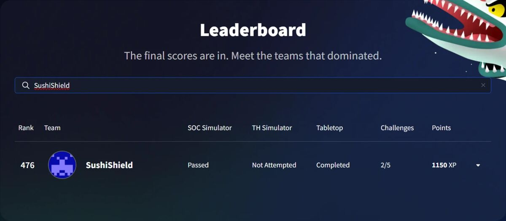
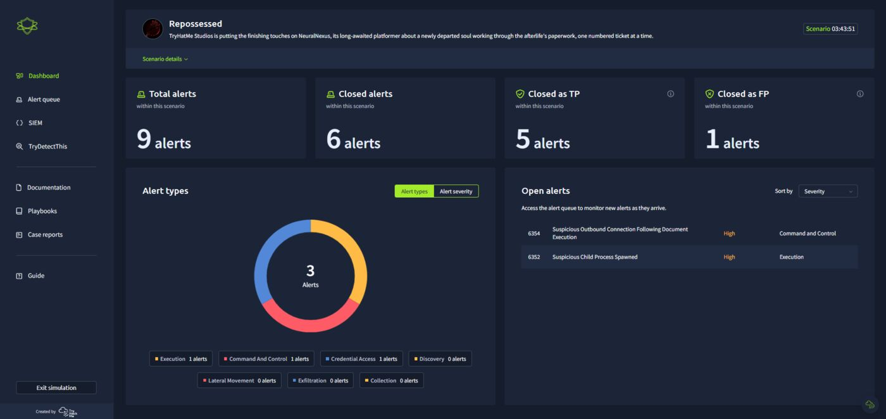
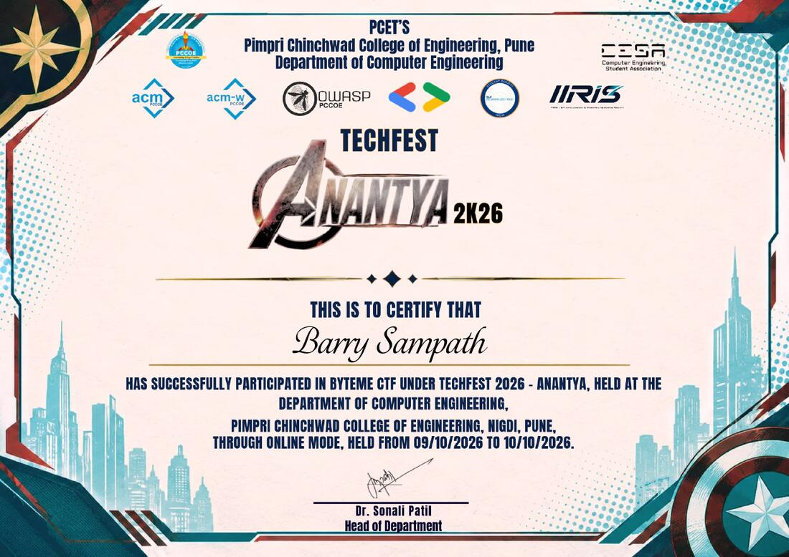
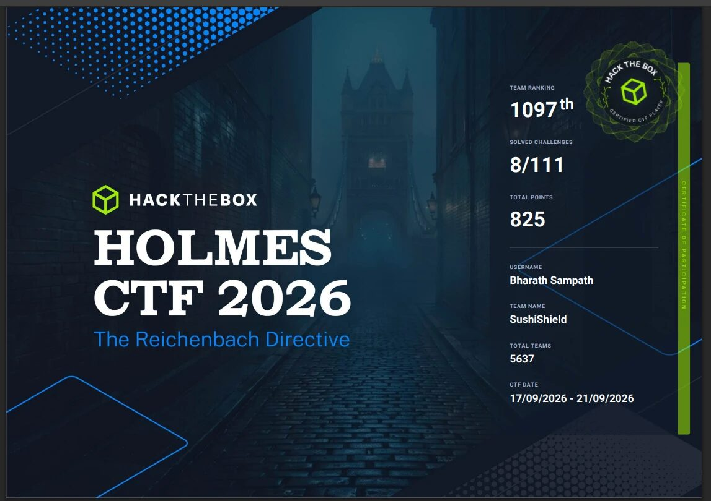

In competition Scoreboard
Capture the flag / Hackathon / 2026
Scoreboard
Five capture-the-flag events and a hackathon from 2026: what each one asked, how I approached it and what I took from it.
Four CTFs between September and October 2026, after a third-place finish at CIMCTF in March. The hackathon was Code Network’s Winter Hackathon, where ClassQuest received the People’s Choice Award.
Every placement here is a team result. The notes describe my own part, in the first person. ByteMe CTF was a participation certificate, with no placement.
I did the practical work hands-on and used AI tools as a guide on some events, It’s Downtime! included. I describe what I did and learned, not a claim to have solved everything unaided.
Defensive CTF
TryHackMe
It’s Downtime!
476thof 1,629 ranked teams · 1,150 XP · Team SushiShield, with Alan Nguyen
A simulator-led, blue-team event built around one connected incident. I teamed up with Alan Nguyen and found a new favourite: SOC (security operations centre) investigation.
The SOC simulator
In Repossessed I worked through nine alerts and explained my verdicts. I passed the simulator.
The tabletop
My incident-response tabletop report scored 86% across 15 decisions. One lesson stayed with me: check what will still be running after a containment action.
The result
Team SushiShield finished 476th of 1,629 ranked teams with 1,150 XP.




Online CTF
OWASP Student Chapter PCCoE
ByteMe CTF
Certificate of participation
Part of TechFest 2026 at PCCoE in Pune. I teamed up with Akira Hasuo and focused on cryptography.
Soul Forge
Two messages had been encrypted with the same keystream. Guessing the generator went nowhere. What worked was assuming a message began with OWASP{, which exposed readable text in the second message. It was a clear reminder that encryption is only as strong as the way it’s used.


Qualifying round
CSAW
CSAW CTF Qualifications
189thof 530 teams · Team SushiShield
A 48-hour qualifying round. Team SushiShield placed 189th of 530 teams. Cryptography and OSINT are the areas I want to keep developing.
Defensive CTF
Hack The Box
Holmes CTF 2026
1,097thof 5,637 teams · 8 of 111 challenges · 825 points · Team SushiShield
The Reichenbach Directive, a defensive CTF run by Hack The Box. A friend pointed me towards it at the last minute and I decided to jump in.
Paper Ghost
I worked through Windows artefacts to reconstruct a simulated compromise, tracing the USB device and payload execution, then checking the outbound traffic.
The result
My eight solves, out of 111 challenges and worth 825 points, put Team SushiShield in the top 20% of 5,637 teams. A top-20% finish in an event I hadn’t planned to enter felt like progress worth celebrating.


Hackathon
Code Network
Winter Hackathon 2026
AwardPeople’s Choice · 15 teams · ClassQuest
ClassQuest turns lecture material into playable quests. Our team of five received the People’s Choice Award after audience voting across 15 teams.
I built the playable demo and frontend foundation, then improved upload handling. Read the ClassQuest case study ↗
CTF
Team SushiShield
CIMCTF 2026
3rdplace overall · Team SushiShield
Team SushiShield placed 3rd overall. I focused on cryptography and OSINT challenges.